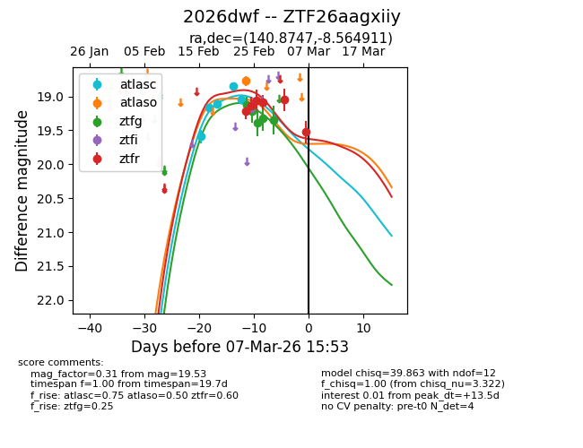
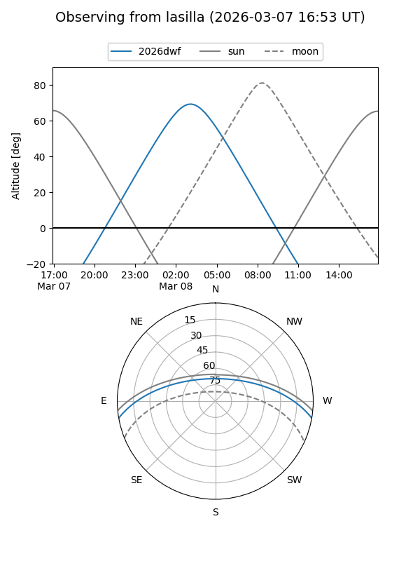
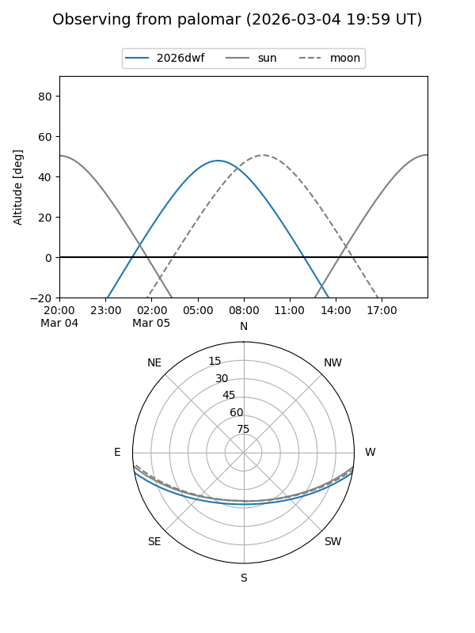
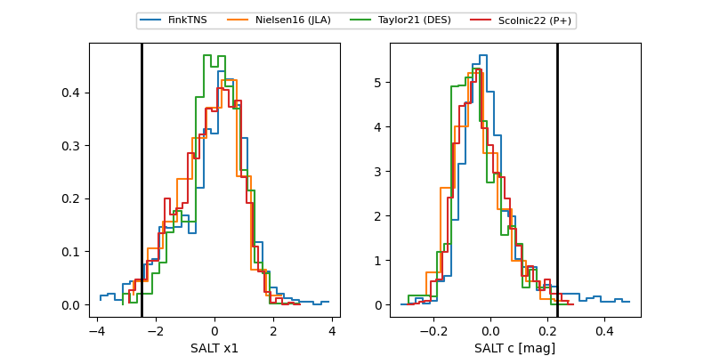

2026dwf
Target 2026dwf at 2026-03-07 15:55
Aliases and brokers:
FINK: link
Lasair: link
ALeRCE: link
TNS: link
YSE: link
alt names
ZTF26aagxiiy (ztf,fink_ztf)
2026dwf (tns,yse)
Coordinates:
equatorial (ra, dec) = 140.8747,-8.56491
equatorial (HMS+DMS) = 09:23:29.94,-08:33:53.68
galactic (l, b) = (240.7025,+28.30049)
Flags:
Photometry:
last atlasc=19.05, atlaso=18.77, ztfg=19.35, ztfr=19.53
5 atlasc, 1 atlaso, 5 ztfg, 6 ztfr detections
Lightcurve

Visibility


Additional plots
